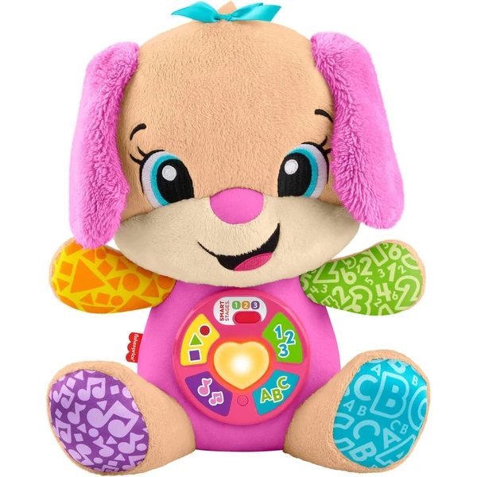

👶 6-12 meses
Perrita musical Laugh & Learn Fisher-Price
Un peluche musical con botones que activan más de 80 canciones, sonidos y frases en varios idiomas. Se adapta a tres niveles de aprendizaje según va creciendo el bebé.
⭐
¿Por qué nos gusta?
- ✔Más de 80 canciones, sonidos y frases.
- ✔Tres niveles que se adaptan al desarrollo del bebé.
- ✔Disponible en varios idiomas, incluido el español.
💬
Lo que más destacan las familias
Muchos padres coinciden en que los distintos niveles hacen que el peluche siga sorprendiendo al bebé según va creciendo, en vez de quedarse corto enseguida. Las canciones y frases en español también se mencionan como un punto a favor frente a otros juguetes similares.